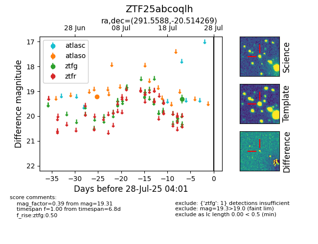

Target ZTF25abcoqlh at 2025-07-28 04:01, see:
FINK: fink-portal.org/ZTF25abcoqlh
Lasair: lasair-ztf.lsst.ac.uk/objects/ZTF25abcoqlh
ALeRCE: alerce.online/object/ZTF25abcoqlh
alt names
ZTF25abcoqlh (ztf,fink)
coordinates:
equatorial (ra, dec) = (291.5588,-20.51427)
galactic (l, b) = (17.9767,-16.61080)
photometry
last atlaso=19.22, ztfg=19.31
1 atlaso, 1 ztfg detections
